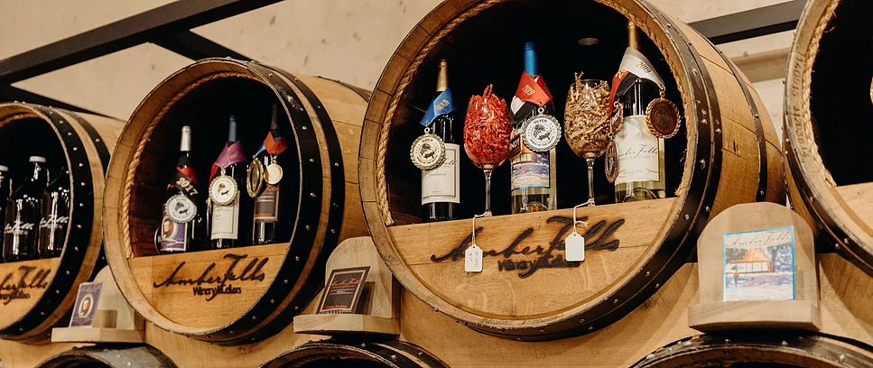

Hampshire, TN | (931) 285-0088
Nashville, TN | (615) 307-8560
Amber Falls Wine
Amber Falls Winery and Cellars produces premiere, international award-winning wines.
Learn more about our wines and the reason behind our International awards, many friends and fans.
Unique Events
Whether it’s our Music on the Ridge series or our special events like our annual Cajunfest;
You’re sure to have a great time enjoying great wines, making new friends and enjoying outstanding music.
Wine Finder
Interested in finding our wine in stores near you?
We have an extensive list and map of retailers that carry our award-winning wines. Click below to find a store near you.
Visit Us
Want a taste?
Our winery is located in beautiful Hampshire, Tennessee. Also visit our remarkable satellite store & wine bar in Nashville in the Opry Mills Mall.
Shop from our premium wine selections
online or find a retailer near you!
James K. Polk
Presidential Wine Series
Portion of proceeds from this series to Benefit The Polk Home & Museum
Sarah's Choice Riesling
The President's Choice Syrah
The People's Choice Blackberry
Enjoy Our Award Winning Wines
Don't miss out on promotions and upcoming events by checking out our event calendarm joining our newsletter, and all our social media outlets.
The Tasting Room at Opry Mills Mall
Nashville, TN
Amber Falls Winery & Cellars
Hampshire, TN